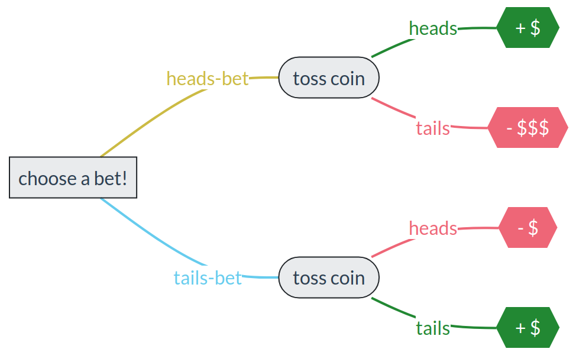

2 Framework
\(\DeclarePairedDelimiter{\set}{\{}{\}}\)
2.1 What does the intro problem tell us?
Let’s approach the “accept or discard?” problem of the previous chapter 1 in an intuitive way.
We’re jumping the gun here, because we haven’t learned the method to solve this problem yet!
First, what happens if we accept the component?
We must try to make sense of the 10% probability that the component fails within a year. For the moment let’s use an imagination trick: imagine that the present situation is repeated 100 times. In 10 of these repetitions the accepted electronic component is sold and fails within a year after selling. In the remaining 90 repetitions, the component is sold and works fine for at least a year. Later on we’ll approach this in a more rigorous way, where the idea of “imaginary repetitions” is not needed.
In each of the 10 imaginary repetitions where the component fails early, the manufacturer loses \(\color[RGB]{238,102,119}11\$\). That’s a total loss of \({\color[RGB]{204,187,68}10} \cdot {\color[RGB]{238,102,119}11\$} = {\color[RGB]{238,102,119}110\$}\). In each of the 90 imaginary repetitions in which the component doesn’t fail early, the manufacturer gains \(\color[RGB]{34,136,51}1\$\). That’s a total gain of \({\color[RGB]{204,187,68}90} \cdot {\color[RGB]{34,136,51}1\$} = {\color[RGB]{34,136,51}90\$}\). So over all 100 imaginary repetitions the manufacturer gains
\[ {\color[RGB]{204,187,68}10}\cdot ({\color[RGB]{238,102,119}-11\$}) + {\color[RGB]{204,187,68}90}\cdot {\color[RGB]{34,136,51}1\$} = {\color[RGB]{238,102,119}-20\$} \]
that is, the manufacturer has not gained, but lost \(20\$\)! That’s an average of \(0.2\$\) lost per repetition.
Now let’s examine the second choice: what happens if we discard the component instead?
In this case it’s clear that the manufacturer doesn’t gain or lose anything. That is, the “gain” is \(0\$\) (this is for sure, so we don’t need to imagine any “repetitions”).
The conclusion is this: If in a situation like the present one we accept the component, then we’ll lose \(0.2\$\) on average. Whereas if we discard it, then we’ll lose \(0\$\) on average.
Obviously the best, or “least worst”, decision to make is to discard the component.
From the solution of the problem and from the exploring exercises, we gather some instructive points:
Is it enough if we simply know that the component is less likely to fail than not? In other words, is it enough to know that the probability of failure is less than 50% without knowing its precise value?
Obviously not. We found that if the failure probability is 10% then it’s best to discard. But we also found that if it’s 5% then it’s best to accept. In either case the probability of failure was less than 50%, but the decision was different.
On top of that, we also found that the probability value determines the average amount of loss when the non-optimal decision is made. Therefore:
Knowledge of precise probabilities is absolutely necessary for making the best decision.
Is it enough if we simply know that failure leads to a loss, and non-failure leads to a gain, without knowing the precise amounts of loss and gain?
Obviously not. In the exercise we found that if the cost of failure is 11$, then it’s best to discard. But we also found that if it’s 5$, then it’s best to accept (given the same probability of failure). And we also found that it’s best to accept when the cost of failure is 11$ but the gain from non-failure is 2$. Therefore:
Knowledge of the precise gains and losses is absolutely necessary for making the best decision.
Is this kind of decision situation only relevant to assembly lines and sales?
By all means not. We examined a clinical problem that’s exactly analogous: there’s uncertainty and probability, there are gains and losses (of lifetime rather than money), and the best decision depends on both probabilities and costs.
2.2 Our focus: decision-making, inference, and data science
Every data-driven engineering problem is unique, with unique difficulties, questions, issues. But there are some general aspects that are common to all engineering problems.
In the scenarios that we explored above, we found an extremely important problem-pattern:
There is a decision or choice to make (and “not deciding” is not an option, or it’s just another kind of choice).
Making a particular decision will lead to some consequences. Some consequences are desirable, others are undesirable.
The decision is difficult to make, because its consequences are not known with certainty, even considering the information and data available in the problem: we may lack information and data about past or present details, about future events and responses, and so on.
This is what we call a problem of decision-making under uncertainty or under risk1; or simply a “decision problem” for short.
1 We’ll avoid the word “risk” because it has several different technical meanings in the literature, some even contradictory.
This problem-pattern appears literally everywhere. Stop for a second, and think about all different situations in which you had to make a decision today. Do they show this pattern?
But our exploration of different scenarios also suggests something important: this problem-pattern seems to have a sort of systematic method of solution!
In this course we’re going to focus on decision problems and their systematic solution method. We’ll learn a framework and some general notions that allow us to frame and analyse this kind of problems. And we’ll learn a universal set of principles to solve it. This set of principles goes under the name of Decision Theory.
But what do decision-making under uncertainty and Decision Theory have to do with data and data science? The three are profoundly, tightly connected on many different planes:
Data science is based on the laws of Decision Theory. These laws are similar to what the laws of physics are to a rocket engineer. Failure to account for these fundamental laws leads to sub-optimal solutions – or to disasters.
Machine-learning algorithms, in particular, are realizations or approximations of the rules of Decision Theory. This is clear, for instance, considering that a machine-learning classifier is actually choosing among possible output classes.
The rules of Decision Theory are also the foundations upon which artificial-intelligence agents – which must perform optimal inferences and decisions – are built.
We saw that probability values are essential to a decision problem. How do we find them? Obviously data play an important part in their calculation. In our introductory example, the failure probability must have come from observations or experiments on previous similar electronic components.
We saw that the values of gains and losses are essential. Data play an important part in their calculation as well.
These five planes will constitute the major parts and motivations of the present course.
There are other important aspects in engineering problems, besides the one of making decisions under uncertainty. For instance the discovery or the invention of new technologies and solutions. Aspects such as these can barely be planned or decided. Their drive and direction, however, rest on a strive for improvement and optimization. But the fundamental laws of Decision Theory tell us what’s optimal and what’s not, so they play some part in these creative aspects as well.
Artificial intelligence is proving to be a valuable aid in these creative aspects. This kind of use of AI is outside the scope of the present notes. But some aspects of this creativity-assisting use do fall within the domain of the present notes. A pattern-searching algorithm, for example, can be optimized by means of the method we are going to study.
2.3 Our goal: optimality, not “success”
What should we demand from a systematic method for solving decision problems?
By definition, in a decision problem under uncertainty there is generally no method to determine the decision that surely leads to the desired consequence. If such a method existed, the problem would not have any uncertainty! Therefore, if there is a method to deal with decision problems, its goal cannot be the determination of the successful decision. Then what should be the goal of such a method?
Imagine two persons, Henry and Tina, who must choose between a “heads-bet” or a “tails-bet” before a coin is tossed. The bets are these:
“heads-bet”: If the coin lands heads, the person wins a small amount of money. But if it lands tails, they lose a large amount of money.
“tails-bet”: If the coin lands tails, the person wins a small amount of money. If it lands heads, they lose the same small amount of money.

Now this happens: Henry chooses the heads-bet. Tina chooses the tails-bet. The coin comes down heads. So Henry wins the small amount of money, while Tina loses the same small amount.
What would we say about their decisions?
Henry’s decision was lucky, and yet irrational: he risked losing much more money than he could win. Tina’s decision was unlucky, and yet rational: she wasn’t risking to lose more than she could win. Said otherwise, the heads-bet had higher risk of loss than the tails-bet, and not even an higher chance of gain. We expect that any person making Henry’s decision in similar, future bets will eventually lose more money than any person making Tina’s decision.
The method we’re looking for is therefore one that, in the hypothetical situation above, would lead to the same decision as Tina’s – even if Tina’s decision was unlucky. That’s the decision that we call rational or optimal in such an uncertain situation.
Our discussion and the distinction between “successful” and “optimal” decisions also shows that we cannot evaluate the efficacy of a method for decisions under uncertainty, by checking whether or how often that method leads to the desired, “successful” consequence. This point is also easily illustrated with a variation on Henry and Tina’s example:
Suppose the general context and the bets are exactly the same. But now imagine Henry and Tina to be the names of two automated decision methods, say two machine-learning algorithms. Also, let’s say that you first toss the coin in secret and see its outcome, then you offer the possible bets to Henry and Tina, who are completely ignorant about the outcome (note that no cheating is involved).
You toss the coin and see that it lands heads. Then the choice of bets is offered to Henry and Tina. Henry chooses the heads-bet and Tina the tails-bet.
Now consider this: you know the “truth”, you know what the successful decision would be. It turns out that Henry made the choice corresponding to the truth. Tina didn’t. Would you then evaluate the Henry algorithm to be better than the Tina algorithm?
For exactly the same reasons already discussed, the Tina algorithm is the better one; it made the optimal decision. Yet it didn’t choose the “truth”. You realize that comparing algorithms is not as simple as checking which one yields the truth more often.
We have then arrived at two conclusions:
“Success” or “correspondence to truth” is generally not a good criterion to judge a decision under uncertainty or to evaluate an algorithm that makes such decisions.
Even if there is no method to determine which decision is successful, there is nevertheless a method to determine which decision is rational or optimal, given the particular gains, losses, and uncertainties involved in the decision problem.
We had a glimpse of this method in our introductory scenarios with electronic components and their variations.
Let us emphasize, however, that we are not giving up on “success”; nor are we trading “success” for “optimality”. We’ll find out that Decision Theory automatically leads to the successful decision in problems where uncertainty is not present or is irrelevant. It’s a win-win. Keep this point firmly in mind:
We shall later witness this fact with our own eyes. We will also take it up in the discussion of some misleading techniques to evaluate machine-learning algorithms.
2.4 Decision Theory
So far we have mentioned that Decision Theory has the following features:
It tells us what’s optimal and, when possible, what’s successful.
It takes into consideration decisions, consequences, costs and gains.
It is able to deal with uncertainties.
What other kinds of features should we demand from it, in order to be applied to as many kinds of decision problems as possible, and to be relevant for data science? Here are two:
If we find an optimal decision in regards to some problem, it may still happen that this decision leads to new, subsequent decision problems. For example, in the assembly-line scenario the decision
discardcould be carried out by burning, recycling, and so on. And each of these actions could have uncertain results and costs or gains. We thus face a decision within a decision. In general, a decision problem may involve several decision sub-problems, in turn involving decision sub-sub-problems, and so on.In data science, a common engineering goal is to design and build an automated or AI-based device capable of making an optimal decision, at least in specific kinds of uncertain situations. Think for instance of an aeronautic engineer designing an autopilot system; or a software company designing an image classifier.
Well, Decision Theory turns out to meet these two demands too, thanks to the following features:
It is susceptible to recursive, sequential, and modular application.
It can be used not only for human decision-makers, but also for AI or automated devices.
Decision Theory has a long history, going back to Leibniz in the 1600s and partly even to Aristotle in the −300s. It appeared in its present form around 1920–1960. What’s remarkable about it is that it is not only a framework: it is the framework we must use. A logico-mathematical theorem shows that any framework that does not break basic optimality and rationality criteria has to be equivalent to Decision Theory. In other words, an “alternative” framework might use different terminology and apparently different mathematical operations, but it would boil down to the same notions and mathematical operations of Decision Theory. So if you wanted to invent and use another framework, then either (a) your framework would lead to some irrational or illogical consequences; or (b) your framework would lead to results identical to Decision Theory. Many frameworks that you are probably familiar with, such as optimization theory or Boolean logic, are just specific applications or particular cases of Decision Theory.
Thus we list one more important characteristic of Decision Theory:
- It is normative.
Normative contrasts with descriptive. The purpose of Decision Theory is not to describe, for example, how human decision-makers typically make decisions. Human decision-makers typically make irrational, sub-optimal, or biased decisions. That’s exactly what we want to avoid! We want a theory, a norm, that human decision-makers should aspire to. That’s what Decision Theory is.